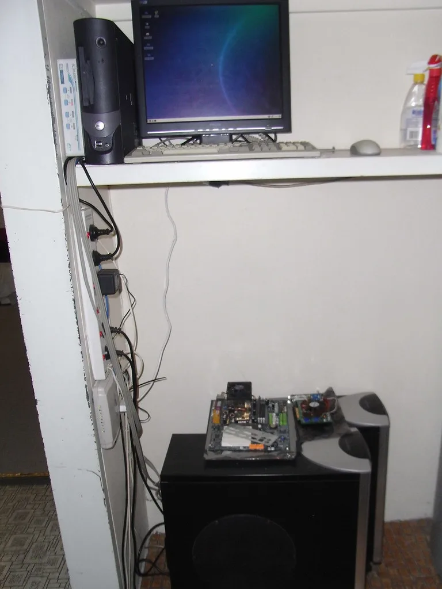

이재명 대통령, 샌프란시스코서 앤트로픽·오픈AI·엔비디아·브로드컴 CEO 연쇄 면담
이재명 대통령이 24일 미국 순방 첫 일정으로 샌프란시스코에서 글로벌 빅테크 최고경영자들과 잇달아 만났다. 다리오 아모데이 앤트로픽 최고경영자를 시작으로 샘 알트만 오픈AI 대표, 젠슨 황 엔비디아 대표, 혹 탄 브로드컴 대표를 순차적으로 면담하며 인공지능(AI) 분야 협력 확대를 요청한 것으로 전해졌다. 취임 이후 첫 미국 서부 순방인 만큼, 정상외교의 초점을 안보나 통상이 아닌 AI 산업 협력에 맞췄다는 점이 눈에 띈다.
이 대통령은 아모데이 앤트로픽 최고경영자와의 면담에서 "대한민국이 앞으로 인공지능 분야 투자를 대대적으로 확대할 생각"이라며 앤트로픽의 각별한 관심과 투자, 기여를 기대한다고 말했다. 정부가 국내 AI 생태계 육성을 위해 대규모 재정 투입을 예고해온 가운데, 글로벌 AI 모델 개발사의 국내 투자와 기술 협력을 직접 요청한 셈이다. 이어진 오픈AI, 엔비디아, 브로드컴 대표들과의 면담에서도 비슷한 기조로 협력 확대를 논의한 것으로 알려졌다.

대통령실은 이번 순방을 계기로 대한민국이 글로벌 AI 공급망의 핵심 국가로 도약하겠다는 의지를 담아 이른바 '샌프란 AI 선언'을 발표했다고 설명했다. 김 실장은 "글로벌 빅테크 기업 CEO들과의 면담을 통해 대한민국의 전폭적인 AI 투자와 글로벌 협력 의지를 강조하고, 글로벌 AI 공급망의 핵심 기업으로부터 투자와 협력 등 실질적인 성과를 이끌어낼 계획"이라고 밝혔다. 정부가 반도체와 AI 인프라를 하나의 축으로 묶어 대외 협력을 추진하고 있음을 보여주는 대목이다.
국내 기업들과 글로벌 빅테크 기업들은 이번 순방을 계기로 약 5기가와트(GW) 규모의 AI 데이터센터와 엔비디아 B200 기준 약 200만 장에 이르는 그래픽처리장치(GPU) 구축을 목표로 전략적 협력을 추진하기로 한 것으로 전해졌다. 실현될 경우 국내 AI 인프라 규모를 크게 끌어올릴 수 있는 수준이어서, 재원 조달과 전력 공급 등 후속 과제에도 관심이 쏠린다.

이번 면담은 정부가 추진 중인 AI 대전환 정책과 맞물려 있다는 분석이 나온다. 정부는 앞서 국내 AI 산업 경쟁력을 끌어올리기 위한 대규모 투자 계획을 밝힌 바 있는데, 이번 순방을 통해 국내 자체 역량 확충과 더불어 해외 빅테크와의 협력을 동시에 추진하는 '투트랙' 전략을 구체화하는 모습이다. 특히 GPU 등 핵심 하드웨어를 안정적으로 확보하는 문제는 국내 AI 기업들의 경쟁력과 직결되는 만큼, 이번 면담 결과가 실제 공급 계약으로 이어질지가 관건으로 꼽힌다.
이 대통령은 샌프란시스코 일정을 마친 뒤 남미 3개국과 독일 순방을 이어갈 예정이다. 대통령실은 이번 순방 기간 반도체와 AI 인프라 분야에서 실질적인 투자 협력 성과를 끌어내는 데 주력하겠다는 입장이며, 순방 후속 조치로 관련 부처들이 구체적인 이행 계획을 마련할 것으로 전망된다.
업계에서는 이번 CEO 연쇄 면담이 단순한 의전성 행사가 아니라, 국내 AI 기업들의 실질적인 협상력을 뒷받침하는 계기가 될 수 있다는 평가가 나온다. 그동안 국내 기업들은 GPU 등 핵심 부품 확보 과정에서 해외 빅테크에 비해 상대적으로 협상력이 약하다는 지적을 받아왔는데, 정상급 채널을 통한 이번 논의가 물량 확보에 도움이 될 수 있다는 기대가 나온다. 다만 실제 계약과 투자로 이어지기까지는 시간이 걸릴 수 있어, 후속 협상 결과를 지켜봐야 한다는 신중론도 함께 제기된다.